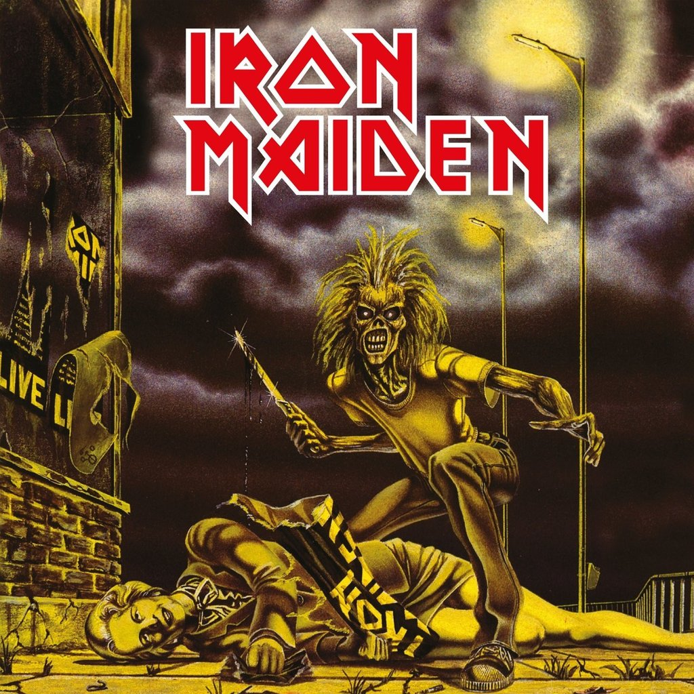
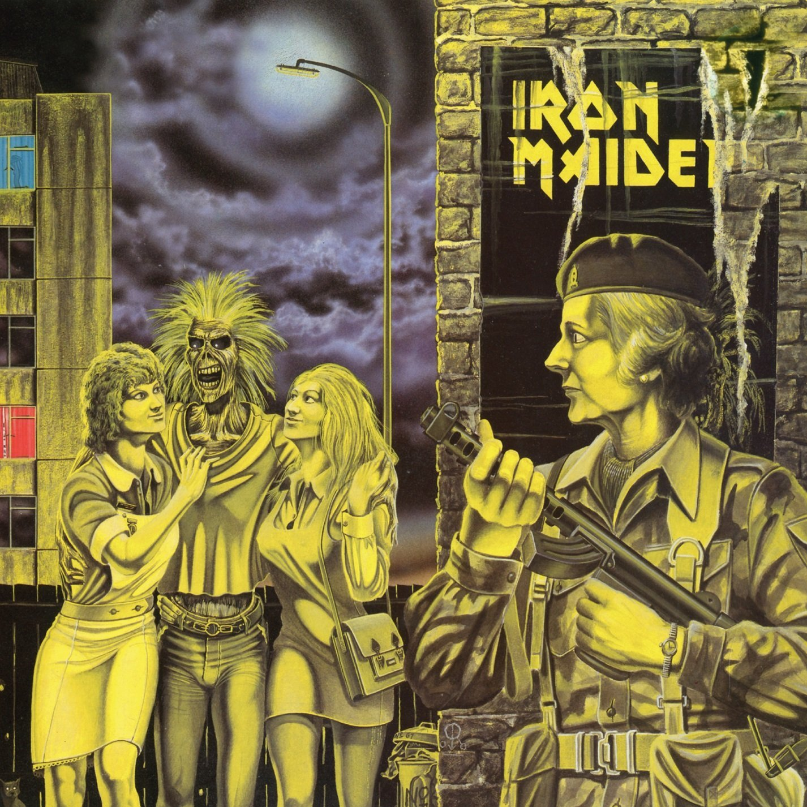
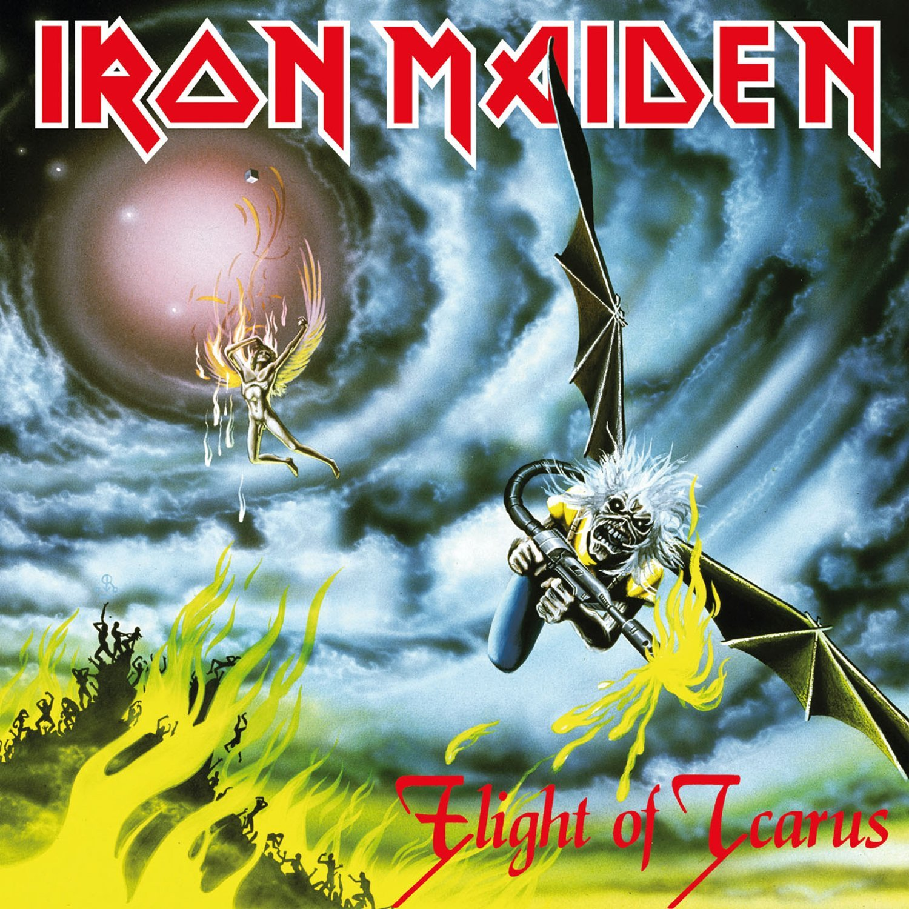
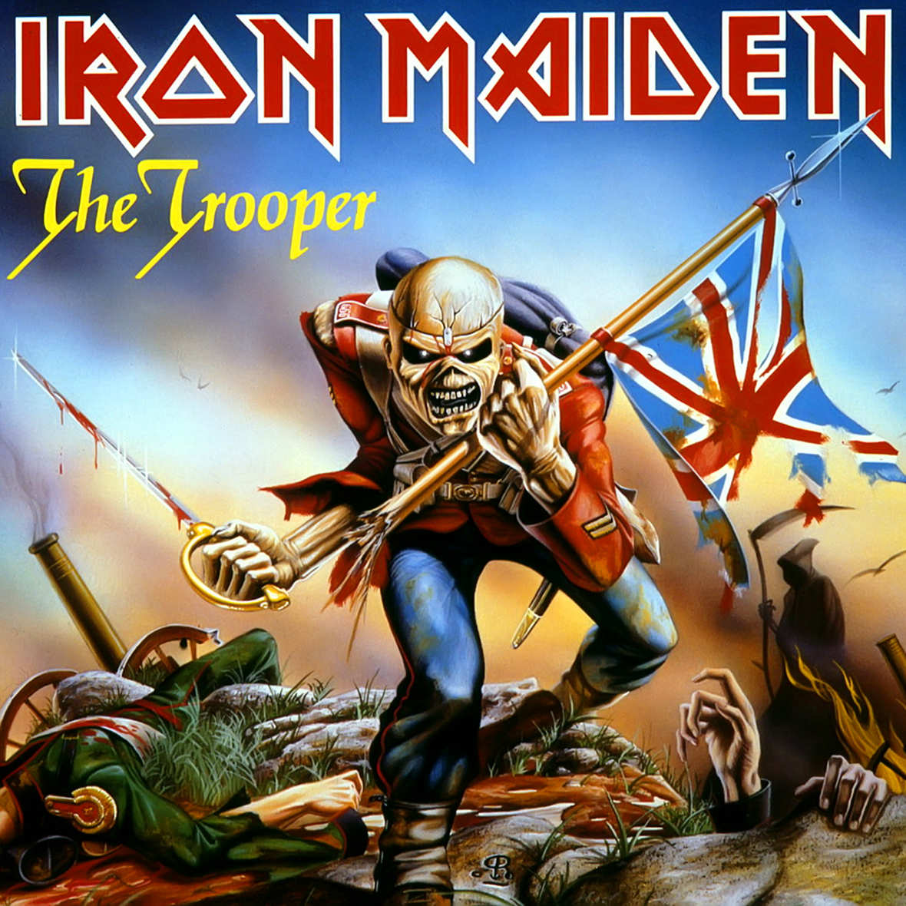
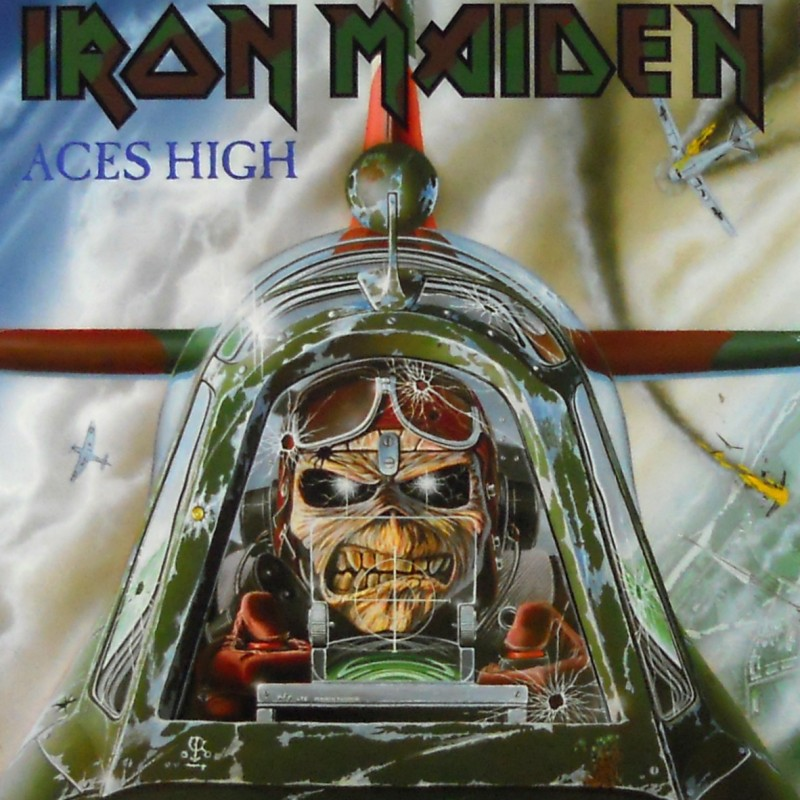
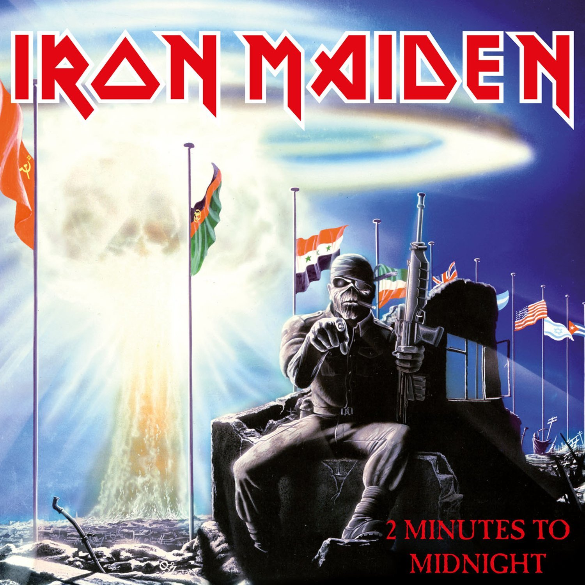
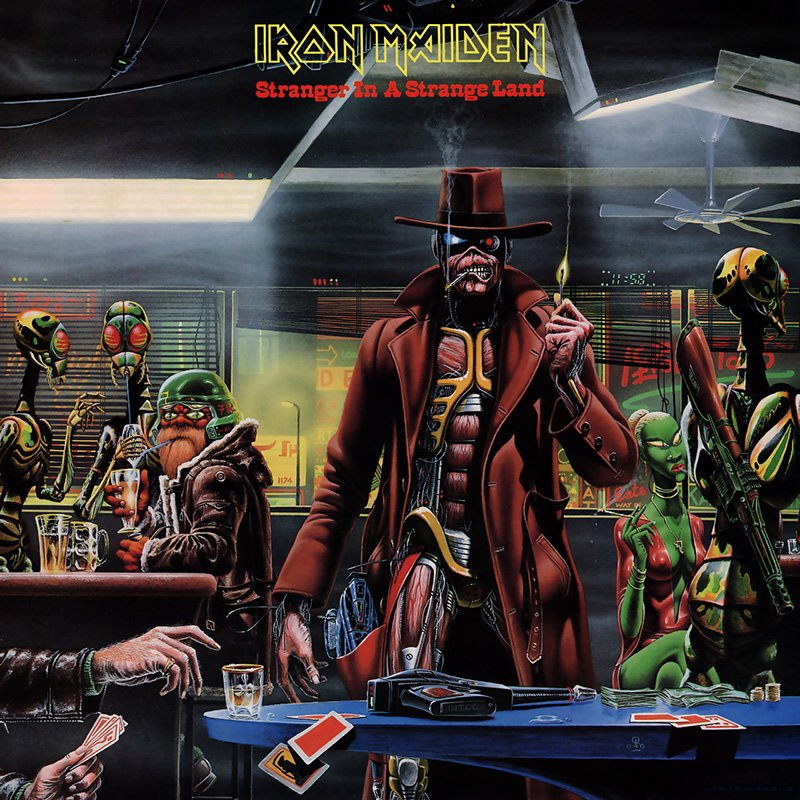
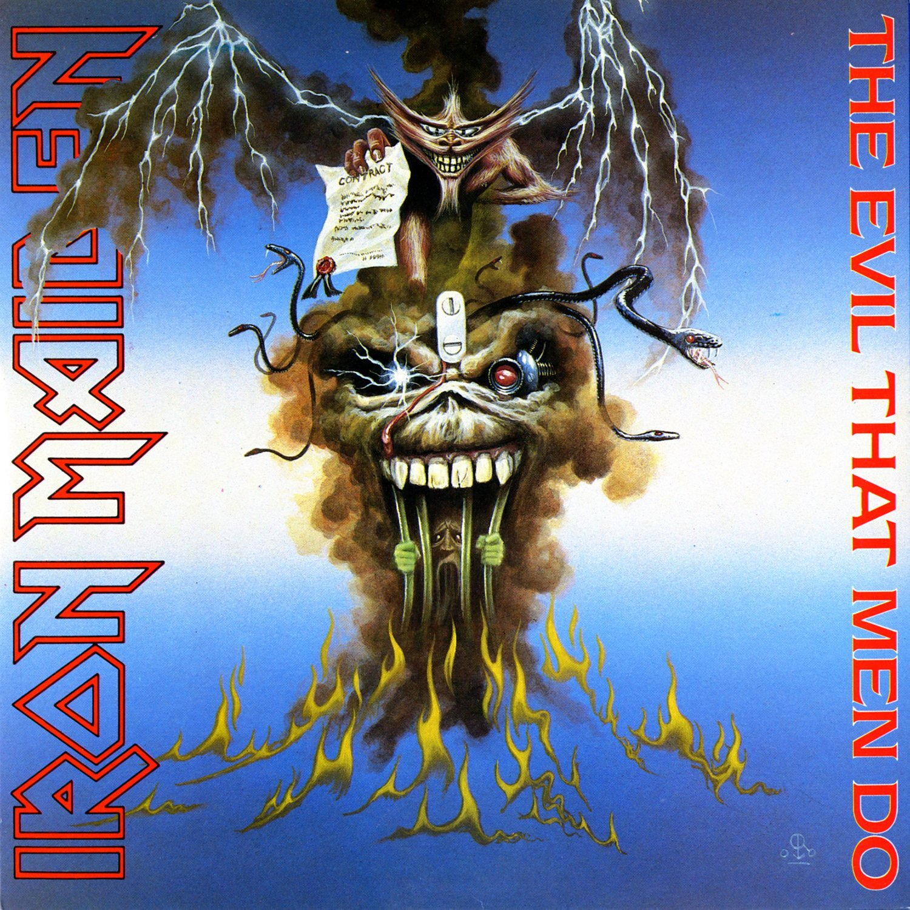
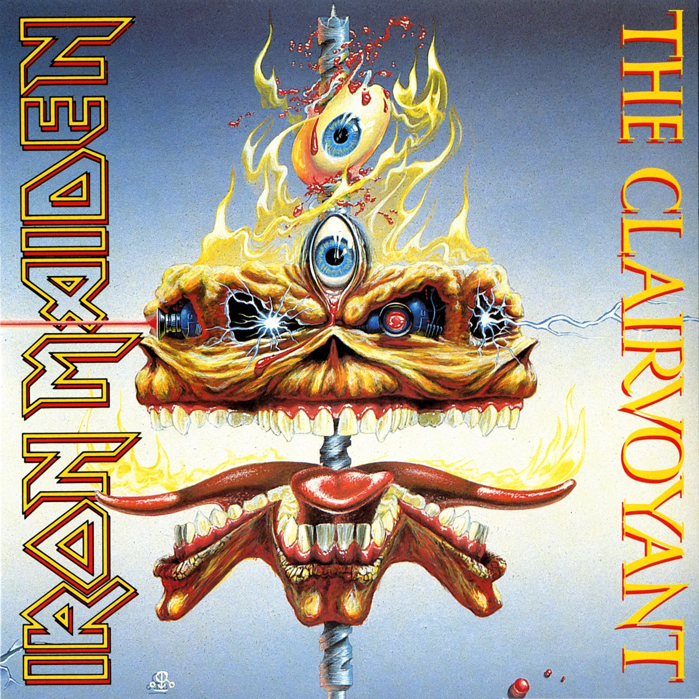
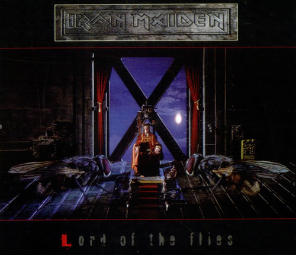

Seguem abaixo alguns singles e a história da reencarnação de Eddie em cada capa:
1980 - Sanctuary
'Sanctuary' é uma das faixas do primeiro álbum do Iron Maiden, Iron Maiden. A capa de seu single mostra o mascote da banda, Eddie, assassinando a primeira-ministra do Reino Unido na época, Margaret Thatcher. A imagem acabou causando uma pequena agitação da mídia local. Na maioria das cópias originais do single, Thatcher aparece com uma tarja preta nos olhos, porque a capa original (extremamente rara), foi considerada ofensiva.
1980 - Women in Uniform
Na capa do single 'Women in Uniform', Margaret "resuscitated" Thatcher está fardada e esperando Eddie e suas garotas numa esquina (seria uma revanche pela capa de Sanctuary?). De fato, esta capa não acabou gerando tanta polêmica como a anterior, mas desagradou bastante as feministas britânicas.
1983 - Flight of Icarus
'Flight of Icarus' é uma das faixas do álbum Piece of Mind. Sua letra é baseada na história de Ícaro. Na mitologia grega, Ícaro era o filho de Dédalo e é comumente conhecido pela sua tentativa de deixar Creta voando – tentativa frustrada em uma queda que culminou na sua morte nas águas do mar Egeu, mais propriamente na parte conhecida como mar Icário. A capa do single possui um Eddie alado matando com um lança-chamas uma figura alada similar ao símbolo da gravadora do Led Zeppelin, que havia se separado.
1983 - The Trooper
'The Trooper' é uma das faixas do álbum Piece of Mind e um dos maiores sucessos da banda até hoje. A música é inspirada num poema da autoria de Lord Tennyson, intitulado: The Charge of The Light Brigade. O poema trata da Batalha de Balaclava, ocorrida durante a Guerra da Criméia, em 1854. Trata-se basicamente de uma narrativa da batalha sob o ponto de vista de um cavaleiro britânico, que, sem esperanças, avança contra as linhas russas. A música foi escrita pelo baixista da banda e principal compositor, Steve Harris e é geralmente interpretada pelo vocalista Bruce Dickinson, vestindo uma farda do exército britânico e segurando uma bandeira do Reino Unido, assim como Eddie aparece na capa do single.
1984 - Aces High
'Aces High' é a primeira faixa do álbum Powerslave. Esta música mostra a visão de um piloto do caça inglês Spitfire durante a Segunda Guerra Mundial. A Batalha da Grã-Bretanha foi a primeira batalha apenas com aeronaves. A blitz alemã da Luftwaffe (blitz em inglês significa flash ou lightning e vem de blitzkrieg, guerra relâmpago) atacou Londres e várias outras cidades inglesas entre 7 de setembro de 1940 e 10 de maio do ano seguinte. Mais de 40.000 pessoas foram atingidas nos bombardeios e mais de um milhão de casas foram destruídas, mais da metade em Londres. Os alemães começaram atacando pistas de pousos e fábricas, para que os ingleses não tivessem como repor suas perdas. Os ingleses atacaram Berlim e depois, por ordens do Führer, a Luftwaffe começou seus ataques contra a população para espalhar medo. As defesas inglesas foram melhorando, a maior dificuldade dos ingleses era se defender durante os ataques noturnos. Conforme o tempo foi passando os ataques diminuíram (os alemães estavam perdendo muitos pilotos e aeronaves) até que os alemães suspenderam a Operação Seelöwe (Leão Marinho) e partiram para conquistar a União Soviética.
Nos shows, antes do início da música, é colocado um discurso de Winston Churchill pronunciado na Câmara dos Comuns no dia 4 de Julho de 1940. No discurso, o então Primeiro-Ministro diz:
"We shall go on to the end.
We shall fight in France
We shall fightover the seas and oceans.
We shall fight with growing confidence and growing strength in the air.
We shall defend our island whatever the cost may be
We shall fight on beaches, we shall fight on the landing grounds,We shall fight in the fields and in the streets,
We shall fight on the hills.
We shall never surrender."
1984 - 2 Minutes to Midnight
'2 Minutes to Midnight' é uma das faixas do álbum Powerslave possui uma letra voltada para as políticas de guerra, como alguns políticos e empresários ganhando com a miséria da população. O comitê Bulletin of the Atomic Scientists da Universidade de Chicago, desde 1947 mantém um relógio chamado de Doomsday Clock (Relógio do Apocalipse) que conta quantos minutos faltam para um desastre nuclear baseado nos acontecimentos mundiais. Quanto mais o gráfico desce, mais próximo do desastre ele está. Em 1953, este índice chegou à 2 minutos (to midnight, ou seja, do apocalipse) e é esse o tema da música.
1986 - Stranger in a Strange Land
'Stranger in a Strange Land' é uma das faixas do álbum Somewhere in Time. A música, ao contrário do que muitos pensam, não está relacionada com o romance de mesmo nome de Robert A. Heinlein. A letra na verdade é inspirada na história de um explorador que visitava o Ártico e acabou morrendo congelado, e depois de cem anos seu corpo foi encontrado preservado por outros exploradores.
Na capa do single Eddie está caracterizado como um cyborg, utlilizando um sobretudo e um chápeu dentro de um bar futurista. O desenho da capa single possui alguns detalhes escondidos:
-A direita de Eddie há um pequeno relógio digital acima da janela, onde está marcando "11:58". Trata-se de uma referência ao single de 2 Minutes To Midnight.
-Duas cartas estão caindo da mesa que está em primeiro plano, em uma delas há a figura de um ceifador em um fundo laranja.
1988 - The Evil That Men Do
'The Evil That Men Do' é uma das faixas do álbum Seventh Son of a Seventh Son. A música teve seu nome retirada de um trecho falado por Marco Antônio após a morte de Julio César pelos senadores traidores, da obra 'Julio César' (1599) de William Shakespeare:
"Friends, Romans, country men, lend me your ears; I come to bury Cæsar, not to praise him. The evil that men do lives after them, the good is oft interred with their bones; so let it be with Cæsar." Julius Cæsar. ACT III Scene 2.
1988 - The Clairvoyant
'The Clairvoyant' é uma das faixas do álbum Seventh Son of a Seventh Son. De acordo com Steve Harris, a canção foi inspirada na morte da psíquica Doris Stokes e a questão de que se ela fosse realmente capaz de ver o futuro, não seria ela capaz de prever sua própria morte?
1995 - Lord of the Flies
'Lord of the Flies' é uma das faixas do álbum The X Factor. A música é inspirada no livro homônimo (O Senhor das Moscas, em português). O livro conta a história de um grupo de garotos de um internato religioso inglês que, após a queda de um avião, fica isolado em uma ilha tropical. Sem adultos, sem regras, o começo é um eterno recreio até que eles notam que precisam sobreviver. Enquanto alguns tentam estabelecer regras e rotinas, outros querem viver livres, apenas caçando e se divertindo. Essa contraposição é mostrada mais nos líderes dos dois grupos, Ralph e Jack. Interpretações da história colocam Ralph representando a democracia, pois foi eleito pela maioria, a ordem, a responsabilidade. Jack é visto como o fascismo, a barbárie, o lado negro da humanidade pois quer controlar a todos na ilha sob seu modo de pensar e usa até a violência para isso. A história é vista como um "trabalho de filosofia moral" ao analisar os diversos aspectos sociais e políticos do mundo, especialmente no pós-guerra, no comportamento das crianças. Cada uma costuma ser associada a uma característica como o racionalismo, a barbárie, a civilização, o mal, o governo.